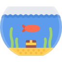
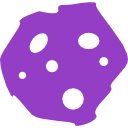
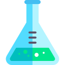
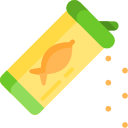

¿Nuevo en marinos?
EQUIPAMIENTO
Pecera de vidrio de 100 Lts o superior ,a mayor volumen mejor estabilidad
FILTRACIÓN
Es esencial que nuestro acuario posea un sistema de filtrado a cargo de un SKIMMER, ya que permite mantener los niveles de nitratos y fosfatos a un nivel bajo, mejorando la calidad de vida de nuestros peces
ILUMINACIÓN

Una buena iluminación nos permite mejorar el crecimiento de nuestros corales, ya que la mayoría de ellos son fotosintéticos.
ROCA VIVA
Es lo más importante de nuestro acuario, es nuestro filtro biológico natural, donde lograremos que se asienten nuestros organismos y bacterias
PARÁMETROS
Si queremos tener un acuario con buen crecimiento y buena salud en nuestros corales, necesitamos medir los parámetros del mismo ejemplo: CA, MG, KH
ALIMENTACIÓN
Una buena alimentación permite mejorar la esperanza de vida de nuestros peces y corales , también mejora los colores de los peces y corales , existen diferentes productos comerciales ejemplo : Red Sea , Tetra, OceanNutrion